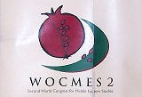
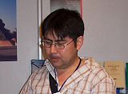

Actualites
| Des chercheurs et des étudiants de l'IIS font une présentation lors du WOCMES-2 Août 2006 Le deuxième Congrès Mondial des Études du Moyen Orient (WOCMES-2), organisé par le Royal Institute des études Inter-religion à Amman, en Jordanie du 11au16 juin 2006, a rassemblé des chercheurs appartenant à divers domaines des sciences humaines et sociales, venus du monde entier, pour échanger leurs recherches et leurs idées. Parmi les 1.250 présentations, il y en avaient qui étaient présentées par 3 individus affiliés à l'Institut des Études Ismailies (IIS) – Dr Ali Qutbuddin Yahia Bayza et Sabrina Bandali. |
WOCMES-2 est unique parce que c’est le premier événement académique important sur les études du Moyen Orient, qui se déroule au Moyen-Orient, offrant ainsi, une opportunité plus grande aux chercheurs d'Afrique du Nord et d'Asie, ainsi qu’à ceux du Moyen-Orient, de s’associer à des spécialistes d'Amérique du Nord et d'Europe. Comportant de nombreux panels et tables rondes de discussions académiques, par un comité international, WOCMES-2 a accueilli plus de 1300 participants venus de 78 pays. Parmi les principaux orateurs de cette conférence, il y avait El Hassan Bin Talal, Président et membre du comité directeur du Royal Institute des Études Inter-Religion (RIIFS), le Professeur Gunter Meyer, Président du Conseil International de WOCMES, Richard W. Buillet, Professeur des Études du Moyen Orient à l'Université de Colombia, et Riaz Hassan, Professeur au Conseil de Recherche Australien et Professeur Emeritus à l'Université de Flinders. Le prix décerné par WOCMES pour une contribution exceptionnelle aux études du Moyen Orient, fut attribué au célèbre sociologue, André Raymond. «La réfutation par Al-Mu'ayyad al-Shirazi du ‘Mulid’ Ibn Al-Rawandi» était le sujet de la présentation du Dr Ali Qutbuddin, un Professeur de recherche invité de l'IIS, qui faisait partie du panel de discussion sur " Approches philosophiques islamiques." Dr. Qutbuddin a discuté de la réfutation par al-Mu'ayyad des idées de al-Rawandi, qui niait que la prophétie était à la fois, source de connaissance, il soulignait l'indépendance de l'intellect humain, et source de loi, il insistait sur les capacités de la raison humaine à distinguer le vrai du faux, quelque chose proche de l'impératif moral de Kant. Dr Qutbuddin a ensuite remis en question l'exactitude des déclarations de Stroumsa et d'autres penseurs qui faisaient l’éloge de Al-Rawandi comme étant un ' esprit libre '. Il a expliqué qu'al-Rawandi prônait une idéologie au même titre que d'autres philosophes tels que Al-Ghazali et Al-Farabi. Yahia Baiza, un étudiant en doctorat et ancien élève de l'Institut des Études Ismailies, a présenté deux sujets lors du WOCMES-2. Dans sa première présentation, 'L’éducation en Afghanistan: Les défis pour la réforme d’un système d'éducation d’après-guerre ', Yahia a parlé de l'état actuel de l'éducation et des défis rencontrés pour la réforme d’un système d'éducation après la guerre en Afghanistan où la majeure partie de l'infrastructure a été détruite, où la capacité humaine est sous-développé, et où le système d'éducation a des moyens limités pour offrir tous les services nécéssaires.
Ceci était le deuxième congrès du WOCMES à ce jour; le premier avait eu lieu à Mayence, en Allemagne, et était conjointement organisé par l'Association Européenne pour les Études du Moyen Orient (EURAMES) et les Associations des Études du Moyen Orient allemande, britannique, française et italienne. L'année dernière, WOCMES avait accueilli des chercheurs et académiciens venus de 52 pays, et organisé plus de 400 panels de discussions, d’ateliers et d’expositions, comportant 1115 différentes présentations. |

 Entrée
Entrée